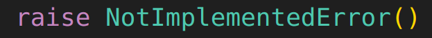

Takeaway of all lectures#
这里只是用来自己看看的
2-Imitation Learning#
Behavioral Cloning
Dagger
3-4#

5-Policy Gradient#
Policy Gradient with Causality
6-Actor-Critic#
Vanilla Actor-Critic with discount
(Don't use it in practice!)
Off-Policy Actor-Critic Algorithm
- 利用现在的policy \(\pi_\theta\) 走一步，得到 \(\{s_t,a_t,s_{t+1},r(s_t,a_t)\}\) ，存入Replay Buffer；
- 从Replay Buffer中随机取一个batch，用这些数据训练 \(Q^{\pi_\theta}_{\phi}\) （见前面的目标函数）。这个过程中，对每一组数据我们需要采样一个新的action \(a_{t+1}\) ；
- 取 \(A^{\pi_\theta}(s_t,a_t)=Q^{\pi_\theta}_\phi(s_t,a_t)\) ；
- 计算 \(\nabla_\theta J(\theta)=\sum_{\text{batch}}\nabla_{\theta}\log \pi_\theta(\tilde{a_t}|s_t)A^{\pi_\theta}(s_t,\tilde{a_t})\) ，其中 \(\tilde{a_t}\) 是从 \(\pi_\theta\) 中采样得到的；
- 用这个梯度更新 \(\theta\) 。
State-Dependent Baseline
(Very good in practice!)
Control Variates
N-Step Return
Generalized Advantage Estimation
7-Value Function#
Value Iteration
Q Iteration
Fitting Q Iteration Algorithm
重复： 1. 收集数据集，包含一系列的 \(\{s,a,s',r\}\) ； 2. 重复 \(K\) 次： 1. 根据公式计算 \(Q\) 的目标； 2. 作 \(S\) 次梯度下降，最小化拟合误差
Vanilla Q Learning Algorithm
重复： 1. 从环境中根据某种policy采样一个 \((s,a,s',r)\) ； 2. 计算一个 \([Q^\pi(s,a)]^\star=r(s,a)+\gamma\max_{a'}Q^{\pi}_\phi(s',a')\) 3. 对 \(L=([Q^\pi(s,a)]^\star-Q^{\pi}_\phi(s,a))^2\) 作一步梯度下降。
DQN Algorithm
while True:
for _ in range(N):
InteractWithEnv()
for _ in range(K): # usually K=1
GetTargetFromBuffer()
GradStep()
phi_0=phi
8-Q Learning#
Double Q-learning
DDPG Algorithm
重复： 1. 从环境中根据某种policy采样一个 \((s,a,s',r)\) ，加入replay buffer \(B\) ； 2. 从replay buffer取出一个batch(相当于 \(K=1\) )，计算目标 \([Q(s,a)]^\star=r(s,a)+\gamma Q_{\phi_0}(s',\pi_{\theta_0}(s'))\) ； 3. 对 \(L(\phi)=\sum_{(s,a)}([Q(s,a)]^\star-Q_\phi(s,a))^2\) 作一步梯度下降； 4. 对 \(L(\theta)=-\sum_s Q_\phi(s,\pi_\theta(s))\) 做一步梯度下降； 5. 更新 \(\phi_0,\theta_0\) ，可以使用隔 \(N\) 次更新一次的方法，也可以使用Polyak平均的方法。
9-Advanced Policy Gradients#
KL Penalty
- example method (know the name): PPO
Natural Gradients
- example method (know the name): TRPO
10 Optimal Control & Planning#
Cross Entropy Method
重复： 1. 随机采样 \(\mathbf{A}_1,\mathbf{A}_2,\cdots,\mathbf{A}_N\) （这里 \(\mathbf{A}=(a_1,\cdots,a_T)\) ）； 2. 计算 \(J(\mathbf{A}_1),J(\mathbf{A}_2),\cdots,J(\mathbf{A}_N)\) ； 3. 保留最好的 \(M\) 个数据点，更新 \(p(\mathbf{A})\) 使得它更接近这 \(M\) 个数据点的分布。一般地， \(p(\mathbf{A})\) 取为高斯分布。
Monte Carlo Tree Search
def MCTS(root):
while True:
# Selection & Expansion
node = TreePolicy(root)
# Simulation
reward = DefaultPolicy(node)
# Backpropagation
update(node,reward)
def update(node,reward):
while True:
node.N += 1
node.Q += reward
if node.parent is None:
break
node = node.parent
def TreePolicy(expanded):
"""UCT Tree Policy"""
if not root.fully_expanded():
return root.expand()
else:
best_child = argmax([Score(child) for child in root.children])
return TreePolicy(best_child)
def Score(node):
return node.Q/node.N + C*sqrt(log(node.parent.N)/node.N)
LQR
- Backward Pass
- 初始化： \(\mathbf{Q}_T=\dbinom{A_T\quad B_T}{B_T^T\quad C_T},\mathbf{q}_T=\dbinom{x_T}{y_T}\)
- 对 \(t=T,T-1,\cdots,1\) ：
- \(a_t=-C_t^{-1}(y_t+B_ts_t)\)
- \(V_t=A_t-B_t^TC_t^{-1}B_t, \quad v_t=xt-B_t^TC_t^{-1}y_t\)
- \(\dbinom{A_{t-1}\quad B_{t-1}}{B_{t-1}^T\quad C_{t-1}}\texttt{ += } \mathbf{F}_{T-1}^TV_{t}\mathbf{F}_{T-1}\) （对应 \(\mathbf{Q}_{t-1}\) ）； \(\dbinom{x_{t-1}}{y_{t-1}}\texttt{ += } (\mathbf{F}_{T-1}^TV_{t}^T+v_{t}^T)\mathbf{F}_{T-1}\) （对应 \(\mathbf{q}_{t-1}\) ）
- Forward Pass
对 \(t=1,2,\cdots,T\) :
- \(a_t=-C_t^{-1}(y_t+B_ts_t)\)
- \(s_{t+1}=\mathbf{F_t}\binom{s_t}{a_t}+f_t+f_t\)
iLQR
重复： 1. 计算各个偏导数； 2. 运行LQR的backward pass，得到 \(a_t\) 关于 \(s_t\) 的线性关系的系数（即前面的 \(a_t=-C_t^{-1}(y_t+B_ts_t)\) ）； 3. 运行LQR的forward pass（可以引入 \(\alpha\) 以保证收敛性）。但这一步计算 \(s_t\) 的时候，我们必须采用真实的演化函数 \(f\)，而不是线性近似。
Model Predictive Control
重复:
- 根据当前的state \(s_t\) ，把它当成第一步，对 \(\sum_{t'=t}^{t+T_0}c(s_{t'},a_{t'})\) 运行iLQR，得到最优的一系列action \(a_t,a_{t+1},\cdots,a_{t+T_0}\) ；
- 扔掉后面的所有action，保留 \(a_t\) ，并和环境进行一步交互。
11 Model-Based RL#
Model-Based RL Algorithm (a.k.a. Model Predictive Control,MPC)
- 用某种baseline policy \(\pi_0\) （比如随机采样）获得一个数据集 \(D=\{(s,a,s')\}\) ；
- 重复：
- 在 \(D\) 上学习一个动力学模型 \(f(s,a)\) ，使得 \(f(s,a)\approx s'\) ；
- 使用某种planning的方法来更新最优策略 \(\pi\) 。一般地，random shooting就足够了；
- 运行当前的最新策略 \(\pi\) 仅一步, 收集 一组（不是一个） 数据，加入数据集： \(D=D\cup \{(s,a,s')\}\) ；
Uncertainty
核心关系：
Algorithm:
- 对每一个ensemble中的模型 \(\theta\) ：
- 对 \(t=1,2,\cdots,T-1\) ，不断用这一个 \(\theta\) 计算 \(s_{t+1}\) ；
- 计算 \(J\) 。
- 计算各个得到的 \(J\) 的平均值。
12 Model Based Method with Policy#
MBPO Algorithm
while True:
# sample data
if q_net is None: # first epoch, random sample
env_data = SampleFromEnv(policy=random)
else:
env_data = SampleFromEnv(policy=ExplorePolicy(q_net))
dynamic_buffer.AddData(env_data)
q_buffer.AddData(env_data)
# train dynamic model
dynamic_model.Train(dynamic_buffer.Sample())
for _ in range(K):
# add additional data to Q learning data buffer
start_point = dynamic_buffer.Sample(n)['states'] # n: a hyperparameter, usually = 1
path = dynamic_model.GetTrajectories(
start=start_point,
length=T,
policy=q_net
)
q_buffer.AddData(path)
# get Q-learning data
train_q_data = q_buffer.Sample()
for _ in range(S):
q_net.GradStep(train_q_data)
q_net.Update()
Dyna Algorithm
重复：
- 运行某种policy（需要exploration）获得一些 \((s,a,s',r)\) ，加入replay buffer \(B\) ；
- 用这一组数据更新一步dynamic model；
- 用这一组数据更新一次Q function；
- 重复 \(K\) 次：
- 从buffer中取出一组数据 \((s,a)\) 。
- 从model给出的概率 \(p(s'|s,a)\) 中采样 几个 \(s'\) ，并用期待值再次更新Q function。
Successor Representation
Algorithm
- 收集一系列和环境交互的数据 \((s,a,r)\) ，训练参数矩阵 \(w\) 使得 \(|r(s,a)-\sum_j w_j\phi_j(s,a)|^2\) 被最小化；
- 选定很多很多个policy \(\pi_1,\cdots,\pi_k\)
- 对 \(i=1,\cdots,k\) ：
- 根据当前的策略 \(\pi\) ，使用上面的递推关系，类似Q-learning地训练 \(\psi_j\) ；
- 利用 \(\psi\) 和 \(w\) 计算 \(Q(s,a)=\frac{1}{1-\gamma} \sum_j w_j\psi_j (s,a)\) 。
- 选出一个表现超过前面所有policy的policy \(\pi^\star\) 。具体地，令
13 Exploration#
UCB
Thompson Sampling
重复：
- 从当前的模型 \(p_\phi(Q)\) 采样一个 \(Q\) ；
- 利用 \(Q\) 进行最优决策，跑一个rollout；
- 用这个rollout的数据更新 \(p_\phi(Q)\) 。
Information Gain
14 Exploration(2)#
Imagining Goals
- 在latent space随机采样作为目标： \(z_g\sim p(z)\) ，然后通过decoder生成目标state： \(x_g\sim p_\theta(x_g|z_g)\) ；
- 按照现有的policy \(\pi(a|x,x_g)\) 来收集rollout，得到最终的state \(\bar{x}\) （最终理想上，我们希望 \(\bar{x}=x_g\) ）；
- 利用现在的数据训练 \(\pi\) ；
- 把 \(\bar{x}\) 加入数据集，用weighted MLE来训练VAE（ \(\log p_\theta(\bar{x})\to p_\theta(\bar{x})^\alpha \cdot \log p_\theta(\bar{x})\) ）
等效目标：
State Marginal Matching
- 重复
- 根据 \(\tilde{r}(s)=\log p^{\star}(s)-\log p_\pi(s)\) 来训练 \(\pi\) ；
- 根据历史上所有的轨迹数据来update \(p_\pi(s)\) 。
- 不返回最后的 \(\pi\) ，而是返回历史上所有 \(\pi\) 的平均。
Exploration by Skills
15 Offline RL (1)#
LSPI Algorithm
重复：
- 利用当前的policy和固定不动的数据集计算 \(w_q=(\Phi^T\Phi-\gamma \Phi^T \Phi')^{-1}\Phi^T r\) ，其中 \(\Phi'\) 的构造方式是：如果 \(\Phi\) 的某一行对应着 \((s,a)\) 的feature，那么 \(\Phi'\) 的那一行就对应着 \((s',a')\) 的feature。（每次第二步更换 \(\pi\) 之后，都要重新计算一次 \(\Phi'\) 。）
- 利用 \(w_q\) ，更新： \(\pi(s)\leftarrow \arg\max_a [\Phi(s,a)w_Q]\)
16 Offline RL (2)#
AWAC Algorithm
重复：
- 使用 \(L_{\text{AWAC}}(\theta)=\mathbb{E}_{s,a\sim \pi_\beta}\left[(\log \pi_\theta(s|a))\cdot\exp\left(\frac{A_{\phi}(s,a)}{\lambda}\right)\right]\) 来训练 \(\theta\) ；
- 使用 \(L_Q(\phi)=\mathbb{E}_{s,a,s'\sim \pi_{\beta}}\left[(Q_\phi(s,a)-(r(s,a)+\gamma \mathbb{E}_{a'\sim \pi_\theta(\cdot|s')}[Q_\phi(s',a')]))^2\right]\) 来训练 \(\phi\) 。
IQL Algorithm
-
重复：
- 使用 \(L_V(\psi)=\mathbb{E}_{s\sim \pi_\beta}\left[\text{ExpectileLoss}_{\tau,Q_\phi(s,a)(a\sim \pi_\beta)}(V_\psi(s))\right]\) 来训练 \(\psi\) ；
- 使用 \(L_Q(\phi)=\mathbb{E}_{s,a,s'\sim \pi_\beta}\left[(Q_\phi(s,a)-(r(s,a)+\gamma V_\psi(s')))^2\right]\) 来训练 \(\phi\) ；
-
最后（在eval时）：
- 使用 \(L_{\text{AWAC}}(\theta)=\mathbb{E}_{s,a\sim \pi_\beta}\left[(\log \pi_\theta(s|a))\cdot\exp\left(\frac{A_{\phi}(s,a)}{\lambda}\right)\right]\) 来训练 \(\theta\) 。
CQL Algorithm
重复：
- 使用 \(L_Q(\phi)=\mathbb{E}_{s,a,s'\sim \pi_{\beta}}\left[(Q_\phi(s,a)-(r(s,a)+\gamma \mathbb{E}_{a'\sim \pi_\theta(\cdot|s')}[Q_\phi(s',a')]))^2\right]+L_{Q,\text{additional}}\) 来训练 \(\phi\) ；
- 训练policy： \(L_{\pi}(\theta)=-\mathbb{E}_{s\sim \pi_\beta}\left[\mathbb{E}_{a\sim \pi_\theta(\cdot|s)}[Q(s,a)]\right]\)
Uncertainty-based Model-based Offline RL
COMBO
19 Soft Optimality#
Objective
Theoretical Solution
SAC algorithm
重复：
- 更新 Q function: \(Q(s,a)\leftarrow r(s,a)+\gamma[Q(s',a')-\log \pi(a'|s')]\) （当然，要采用target network等优化，和之前一样，不再赘述）；
- 使用 REINFORCE 或者 REPARAMETERIZE 来更新policy，objective为 \(J=\mathbb{E}_{a\sim \pi(a|s)}[Q(s,a)-\log \pi(a|s)]\) 。
- 如果使用 REINFORCE，那么 fake loss 为 \(\hat{J}=\mathbb{E}_{a\sim \pi(a|s)}[\log \pi(a|s)Q(s,a)]+\mathcal{H}(a|s)\) （这是对一组数据的梯度）；
- 如果使用 REPARAMETERIZE，那么直接计算loss就可以了。
- 你可能会疑问，用 REINFORCE 怎么计算熵 \(\mathcal{H}\) 的梯度？实际上，也不是不可以，只需要把fake loss设置为 \(\frac{1}{2}\mathbb{E}_{a\sim \pi(a|s)}[(\log \pi(a|s))^2]\) 就可以了。当然，这看起来比较奇怪。实际上，REPARAMETERIZE的效果确实也更好。
- 根据policy来收集数据。
20 Inverse Reinforcement Learning#
MaxEnt IRL (sampling version)
初始化 \(\pi_\psi\) 为随机策略；
- 在当前的 \(\psi\) 下，使用soft optimality的目标训练 \(\pi_\psi\) 几步；
- 用上面contrastive learning的公式，通过从 \(\pi_\psi\) 中采样来计算梯度；
- 用梯度更新 \(\psi\) 。
Importance weighted modification:
Adversarial IRL
21 RL and LM#
POMDP - 最优策略可能是随机的 - memoryless: policy gradient - memoryful: value-based, with state model/history states
DPO
22 Transfer Learning & Meta Learning#
Transfer Learning: Concepts
- forward transfer learning
- domain shift & domain adaptation
- difference in dynamics: solution
- randomization helps
- multi-task learning
- contextual policies
- goal-conditioned policies
Meta Learning
Methods: - RNN & Contextual Policies - MAML - Variational Inference
MAML
Created: 2024年10月29日 20:50:57